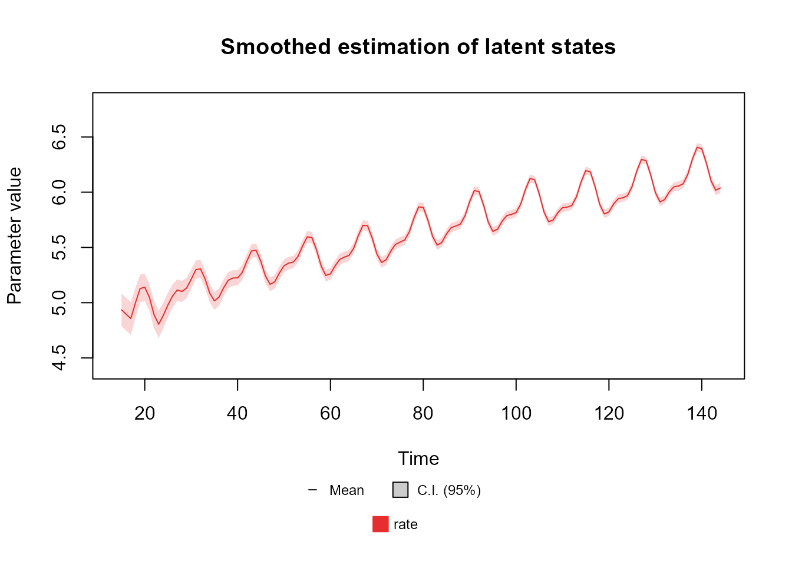
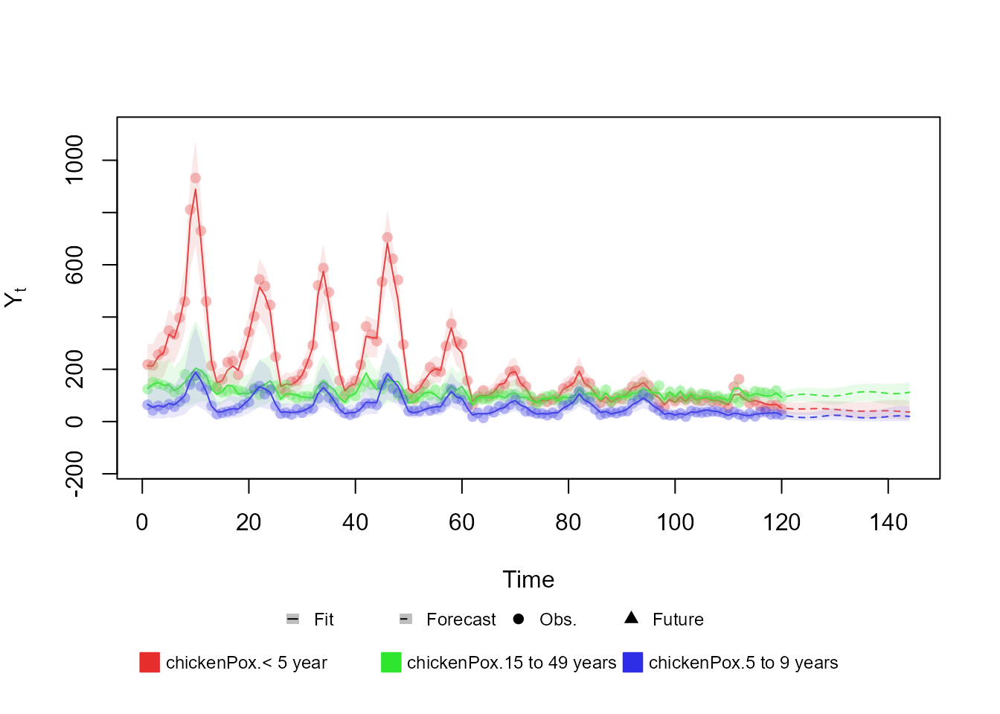
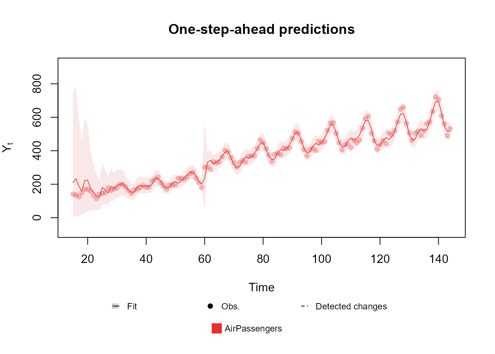

Table of contents
-
Creating the model structure: >
- A structure for polynomial trend models
- A structure for dynamic regression models
- A structure for harmonic trend models
- A structure for autoregresive models
- A structure for overdispersed models
- Handling multiple structural blocks
- Handling multiple linear predictors
- Handling unknown components in the planning matrix \(F_t\)
- Special priors
-
Advanced examples:>
Fitting and analysing models
In this section we briefly present the usage of the
fit_model function, along side the auxiliary functions for
analyzing a fitted model, such as the summary,
coef,plot, forecast and
simulate methods. For a deep dive in the details of each
argument of each function, see the documentation of those function
and/or the reference manual.
Filtering and smoothing
The ... argument receives dlm_block and
dlm_distr objects, the creation of which was described in
the previous sections. In particular, if the user gives a
dlm_distr object as a named argument, its name is used as
the label for that outcome.
The argument smooth is a Boolean indicating if the
smoothed distribution of the latent states should be evaluated. In
general, we recommend the users to not change this value, as the
computational cost of smoothing is usually negligible.
p_monit controls the sensitivity of the automated
monitoring and we shall discuss its usage in subsection Intervention and
monitoring.
Bellow we present a code that fits a Poisson model:
level <- polynomial_block(rate = 1, order = 2, D = 0.95)
season <- harmonic_block(rate = 1, period = 12, order = 2, D = 0.975)
outcome <- Poisson(lambda = "rate", data = c(AirPassengers))
fitted.model <- fit_model(
level, season, # Strucuture
AirPassengers = outcome
) # outcomeThe first two lines create structural blocks representing a random
walk on \(\mu_t\) and a seasonal
component described by harmonics. The fourth line creates a Poisson
outcome such that the rate parameter lambda is equal to
\(\exp\{\text{rate}\}\), where
rate is the label given to the linear predictor when
creating the structural blocks (see section Creating the model structure for details
about the linear predictor). The last line receives the model structure
and the Poisson outcome and fits the model, obtaining the parameters for
the filtered and smoothed distribution of all latent states.
The user can see how the model fits the data using the
plot method, the syntax of which is as follows:
plot.fitted_dlm(model, pred.cred = 0.95, lag = 1, cutoff = floor(model$t / 10), plot.pkg = "auto")The model argument must be a fitted_dlm
object (i.e., the output of the fit_model function).
pred.cred must be a number between \(0\) and \(1\) representing the desired credibility of
the predictions.
lag must be an integer representing the number of steps
ahead to be used for predictions. If lag\(<0\), the smoothed distribution is used
for predictions and, if lag\(=0\), the filtered distribution is used
Instead.
cutoff must be an integer representing the number of
initial steps that should be omitted in the plot. Usually, the model is
still learning in the initial steps, so the predictions are not
reliable. The default value is one tenth of the sample size rounded
down.
Lastly plot.pkg must be a string specifying the plot
engine to be used. Should be one of 'auto',
'base', 'ggplot2' or 'plotly'. If
'auto' is used, then the function tries to use the
plotly package, if it fails, then it tries to use the
ggplot2 packge and, if it also fails, the native
functions provided by R will be used.
plot(fitted.model, plot.pkg = "base")
The remaining functions and methods in this section have similar
usage as the plot.fitte_dlm method, as such, for the sake
of brevity, we will only highlight the unique arguments and/or behaviors
of each function or method present. We strongly advise the user to
consult the reference manual and the documentation of each function for
detailed descriptions of any function.
To see a summary of the fitted model, one can use the
summary method:
summary(fitted.model)Fitted DGLM with 1 outcomes.
distributions:
AirPassengers: Poisson
---
No static coeficients.
---
See the coef.fitted_dlm for the coeficients with temporal dynamic.
One-step-ahead prediction
Log-likelihood : -580.2514
Interval Score : 129.48462
Mean Abs. Scaled Error: 0.47013
---Note that only the static components of the model, i.e. those without
temporal dynamic, were shown in the summary. This is so because is
unpratical to show the values of all latent states at all times in the
summary, while showing one specific time can lead to misleading results
for unaware users. To see latent states with temporal dynamic, one must
use the coef or plot methods.
For more details about the usage of the summary method,
see the associated documentation
(help(summary.fitted_dlm)).
Extracting components
Naturally, the user may want to extract information about the
posterior distribution of the parameters of the fitted model, such that
a more thorough analysis may be performed. For extracting the parameters
of the distribution of latent states, linear predictors and
observational model parameters, one can use the coef
method:
coef(object, t.eval = seq_len(object$t), lag = -1, pred.cred = 0.95, eval.pred = FALSE, eval.metric = FALSE, ...)The object parameter must be specified as a
fitted_dlm object, which represents the model from which
the components will be extracted. The t.eval parameter
should be a vector that denotes the time indices at which the posterior
is to be evaluated. The parameters lag and
pred.cred retain their meanings analogous to those in the
plot method of the fitted_dlm class. The
eval.pred parameter requires a boolean value, indicating
whether the predictive distribution for the observations is to be
evaluated. Additionally, the eval.pred parameter should be
a boolean specifying whether the model comparison metrics are to be
computed.
The output of this function is a dlm_coef object
containing:
data: A data frame with the model evaluated at each observed time.mt: A \(n \times T\) matrix representing the mean of the latent states at each time, where \(n\) is the number of latent states in the model and \(T\) is the length of the time series;Ct: A 3D-array containing the covariance matrix of the latent state at each time. Dimensions are \(n \times n \times T\);ft: A \(k \times T\) matrix representing the mean of the linear predictor at each time, where \(k\) is the number of linear predictors in the model and \(T\) is the length of the time series;Qt: A 3D-array containing the covariance matrix for the linear predictor at each time. Dimensions are \(k \times k \times T\);Several vectors with some metrics, including the predictive log-likelihood, Mean Absolute Scaled Error (MASE, Hyndman and Koehler, 2006) and the Interval Score (interval.score, Bracher, 2021).
conj.param: A list containing the parameters for the conjugate distribution of the parameter of the observational model.
It is important to highlight that, following the method proposed in Alves et al. (2024), the joint distribution of the latent states and linear predictors at each time is Gaussian, such that the mean vector and covariance matrix completely define their distribution.
The user may also want to plot the latent states, for which the
plot method for the dlm_coef class can be
used:
If the user wants to see only a restricted set of latent states, the
extra argument var can be used to specify the label of the
variables to plot:
plot(fitted.coef, "Var.Poly.Level", plot.pkg = "base")The user may also plot the linear predictors, by specifying the name of the linear predictor:
plot(fitted.coef, "rate", plot.pkg = "base")
Lastly, although we do not recommend it, the user may also extract
some of these information directly from the fitted_dlm
object.
We strongly recommend every user to consult the documentation of each of these functions to see the full set of features provided by the kDGLM package.
Forecasting
Notice that all methods and functions presented previously were
restricted to the period where the model was fitted. If the user wishes
make predictions for future observations, the forecast
method can be used:
forecast(object,
t = 1,
plot = ifelse(requireNamespace("plotly", quietly = TRUE), "plotly", ifelse(requireNamespace("ggplot2", quietly = TRUE), "ggplot2", "base")),
pred.cred = 0.95,
...
)The object parameter is required to be a
fitted_dlm object. The t parameter specifies
the prediction window. The plot parameter determines
whether a plot should be generated and, if applicable, which engine to
use, akin to the plot method in the fitted_dlm class. The
pred.cred parameter signifies the credibility of the
confidence intervals.
forecast(fitted.model, t = 20, plot = "base")$plotAdditionally to a plot (which is optional), the forecast
method for the fitted_dlm class also provides a similar set
of attributes of that which the dlm_coef class has,
specifically, the predictive distribution for the latent states, the
linear predictors and the observational model parameters, along with the
predictions for future observations.
It is relevant to point out that if external data is necessary for
forecasting, such as for models with regressive blocks or transfer
functions, it is necessary to pass those values for the
forecast method. In this scenario, the user must pass a new
argument named as the variable that is “missing” from the model. See the
documentation to see how to determine the name of the missing values or,
more practically, try to use the forecast method without
the necessary arguments, since the name of the missing variables will be
presented in the error message.
Here we present two examples for a model with Multinomial outcome: One where the covariates where not properly passed and another where they were:
structure <-
polynomial_block(p = 1, order = 2, D = 0.95) +
harmonic_block(p = 1, period = 12, D = 0.975) +
noise_block(p = 1, R1 = 0.1) +
regression_block(
p = chickenPox$date >= as.Date("2013-09-1"),
# Vaccine was introduced in September of 2013
name = "Vaccine"
)
outcome <- Multinom(p = c("p.1", "p.2"), data = chickenPox[, c(2, 3, 5)])
fitted.model <- fit_model(structure * 2, chickenPox = outcome)
forecast(fitted.model, t = 24, plot = "base") # Missing extra argumentsError in forecast.fitted_dlm(fitted.model, t = 24, plot = "base"): Error: Missing extra argument: Vaccine.1.Covariate
forecast(fitted.model,
t = 24,
Vaccine.1.Covariate = rep(TRUE, 24), # Extra argument for covariate 1
Vaccine.2.Covariate = rep(TRUE, 24), plot = "base"
) # Extra argument for covariate 2
For more details on the usage of this function, see the associated documentation.
Updating a fitted model
One of the major advantages of the sequential nature of the methodology proposed in Alves et al. (2024) is that it allows for the updating of the posterior distribution of the parameter when new data arrives, but without the necessity of reprocessing the data previously observed. This feature is particularly useful in problems that involve monitoring or real time inference about a phenomena.
For updating a fitted_dlm object, the user can use the
update method for the fitted_dlm class:
update.fitted_dlm(object, ...)The object argument must be a fitted_dlm
object. Moreover, the ... argument must be a sequence of
named arguments containing the new information observed. For
example:
level <- polynomial_block(rate = 1, order = 2, D = 0.95)
season <- harmonic_block(rate = 1, period = 12, order = 2, D = 0.975)
# Omitting the last 44 observations
outcome <- Poisson(lambda = "rate", data = c(AirPassengers)[1:100])
fitted.model <- fit_model(
level, season, # Strucuture
AirPassengers = outcome
) # outcome
updated.fit <- update(fitted.model,
AirPassengers = list(data = c(AirPassengers)[101:144])
)Note that the name of the argument containing the new observations
must be the label given to that outcome when first fitting the model. In
this case, the argument must be named update, as this was
the label used in the fit_model function If a label was not
provided when fitting the model, a default name will be used, which
consist of the string 'Series.' followed by a proper index
for that outcome.
The update function may require extra arguments
containing covariates, pulses (for the transfer function), the offset,
etc.. In such cases, the syntax is the same as the forecast
method.
Intervention and monitoring
As a key feature, the kDGLM package has support for
intervention and automated monitoring. First, if the user is aware that
at some specific time there is some change in the time series that is
not part of its temporal dynamic, then the user should provide that
information in the model structure. For that we provide the
intervention function:
data <- c(AirPassengers)
# Adding an artificial change, so that we can make an intervention on the data at that point
# Obviously, one should NOT change their own data.
data[60:144] <- data[60:144] + 100
level <- polynomial_block(rate = 1, order = 2, D = 0.95)
season <- harmonic_block(rate = 1, order = 2, period = 12, D = 0.975)
# Reducing the discount factor so that the model can capture the expected change.
level <- level |> intervention(time = 60, D = 0.005, var.index = 1)
# Comment the line above to see the fit without the intervention
fitted.model <- fit_model(level, season,
AirPassengers = Poisson(lambda = "rate", data = data)
)
plot(fitted.model, plot.pkg = "base")
See the documentation of the intervention function for
more details about its arguments. Also, we strongly recommend the user
to consult West and Harrison (1997), chapter 11 for a detailed
discussion about Feed-Foward Interventions.
In case the user is not aware of any behavioral changes in the data, but suspects that they may have occurred at some unknown time, then we recommend the use of automated monitoring.
To fit a model using automated monitoring, the user must provide a
valid value for the p.monit argument in the
fit_model function This argument receives values between
\(0\) and \(1\), such that its value is interpreted as
the prior probability (i.e., the probability before observing the data),
at any given time, of behavioral change in the series that is not
accommodated by the temporal dynamic.
data <- c(AirPassengers)
# Adding an artificial change, so that we can make an intervention on the data at that point
# Obviously, one should NOT change their own data.
data[60:144] <- data[60:144] + 100
level <- polynomial_block(rate = 1, order = 2, D = 0.95)
season <- harmonic_block(rate = 1, order = 2, period = 12, D = 0.975)
fitted.model <- fit_model(level, season,
AirPassengers = Poisson(lambda = "rate", data = data),
p.monit = 0.05
)
plot(fitted.model, plot.pkg = "base")The approach used for automated monitoring is almost identical to
that of West and Harrison (1997), chapter 11.4, using Bayes’
factor, such that p.monit\(=0.05\) yields a threshold equivalent to
that recommended in West and Harrison (1997).
Tools for sensitivity analysis
In some situations, the user may not be sure about which value to use for some hyperparameter of the model (such as the discount factor or the order of a block) or about the inclusion of some structural block. As such, one might choose to perform a sensitivity analysis on the effect of those choices.
As an motivational example, let us assume that we are unsure about which value to choose for the discount factor in a polynomial trend block of a Poisson model. First, when defining the model structure, we must set the discount factor as a string, which will be used as the label for the unspecified parameter:
level <- polynomial_block(rate = 1, order = 2, D = "D1")By setting the discount factor as a string, the structural block becomes partially :
summary(level)Basic DLM block.
latent states:
Var.Poly: Level, Slope (2 variable(s))
Linear predictors:
rate
Status: undefined
Serie length: 1
Interventions at:
Number of latent states: 2
Number of linear predictors: 1As such, this block be used in the fit_model function,
unless the value of D1 is specified:
# D1 is missing
season <- harmonic_block(rate = 1, order = 2, period = 12, D = 0.975)
outcome <- Poisson(lambda = "rate", data = c(AirPassengers))
fitted.model <- fit_model(level, season, AirPassengers = outcome)Error in fit_model(level, season, AirPassengers = outcome): Error: No model to test. Verify if the hyper-parameters are properly specified and if a valid value for condition argument is being passed.
# D1 is set within the fit method
season <- harmonic_block(rate = 1, order = 2, period = 12, D = 0.975)
outcome <- Poisson(lambda = "rate", data = c(AirPassengers))
fitted.model <- fit_model(level, season, AirPassengers = outcome, D1 = 0.95)As the user can see in the error message above, an undefined
dlm_block can only be used to fit a model, unless the value
of the missing hyper-parameters are passed as named arguments.
Addionally, the user may pass several sequence of values for the missing
hyper-parameter. In this case, the fit_model function is
used to fit a set of models, while computing some comparative
metrics.
fit.dlm_block(...,
smooth = TRUE, p.monit = NA,
condition = "TRUE", metric = "log.like",
pred.cred = 0.95, metric.cutoff = NA, lag = 1
)The argumetns ..., smooth and
p.monit were discussed in Subsection Filtering and
smoothing.
Beyond dlm_blocks and dlm_distr objects,
the ... argument also must containing, for each undefined
parameter (if any exist), the values to be tested. By default, this
function will test all possible combinations of the undefined parameter.
If the user wishes to skip some combinations, the condition
argument can be used to provide a string with the criterion to determine
which combinations shall be evaluated.
The remaining options provide some control over the comparative
metrics. The metric argument ('mase',
'log.like' or 'interval.score') indicates
which metric to use when selecting the best model (all metrics are
calculated, not matter the value of the metric argument,
but only the best model by the chosen metric is saved). The
lag argument indicates the number of steps ahead to be used
for predictions (\(0\) indicates
filtered predictions and negative values indicate smoothed predictions).
The pred.cred argument indicates the credibility of the
intervals used when computing the Interval Score. The
metric.cutoff argument indicates the number of initial
observations to be ignored when computing the metrics.
After evaluating all valid combinations of hyper parameters, the
fit_model function returns the best model by the chosen
metric, along with a data frame containing the metrics for each model
evaluated.
level <- polynomial_block(rate = 1, order = 2, D = "D.level")
season <- harmonic_block(
rate = "sazo.effect", period = 12,
order = 2, D = "D.sazo"
)
outcome <- Poisson(lambda = "rate", data = c(AirPassengers))
fit_model(level, season, outcome,
sazo.effect = c(0, 1),
D.level = seq(0.8, 1, l = 11),
D.sazo = seq(0.95, 1, l = 11),
condition = "sazo.effect==1 | D.sazo==1"
)$search.data |> head()It is important to note that not all hyper parameters can be tested
directly by the fit_model function, indeed, only the
components associated with \(F_t\),
\(D_t\), \(h_t\), \(H_t\), \(a_1\) and \(R_1\) can be treated as undefined. Still,
if the user wants to test some other hyper parameter that cannot be
tested directly (such as the order of a polynomial block or the period
of a harmonic block), he can create one block for each option and
perform a sensitivity analysis for the inclusion/exclusion of each
block:
# Creating a block for each order
level <- polynomial_block(rate = "pol.ord.1", order = 1, D = 0.95) +
polynomial_block(rate = "pol.ord.2", order = 2, D = 0.95) +
polynomial_block(rate = "pol.ord.3", order = 3, D = 0.95) +
polynomial_block(rate = "pol.ord.4", order = 4, D = 0.95)
season <- harmonic_block(rate = 1, order = 2, period = 12, D = 0.975)
outcome <- Poisson(lambda = "rate", data = c(AirPassengers))
fit_model(level, season, outcome,
# Each block can be present (1) or absent (0).
pol.ord.1 = c(0, 1), pol.ord.2 = c(0, 1),
pol.ord.3 = c(0, 1), pol.ord.4 = c(0, 1),
condition = "pol.ord.1+pol.ord.2+pol.ord.3+pol.ord.4==1"
# Only test combinations with exactly one polynomial block.
)$search.data |> head()Sampling and hyper parameter estimation
Lastly, one may also want to draw samples from the latent states, linear predictors and/or the parameters \(\eta_t\) of the observational model. This can be useful to evaluate non-linear functions of the model parameters or when the DGLM is only a part of a bigger model, from which the parameters are being estimated with Gibbs Algorithm. It is important to note that, with the method proposed in Alves et al. (2024), sampling from the posterior distribution of the latent states is straight forward, allowing the user to obtain large independent (not approximately independent, but exactly independent) samples with very low computational cost. See West and Harrison (1997), chapter 15, for details about the sampling algorithm.
The kDGLM package offers the simulate
function, which provides a routine for drawing independent samples from
any fitted model:
simulate(fitted.model, 5000)For the example above, where our model has \(6\) latent states and \(144\) observations (which yields a total of \(864\) parameters), it takes approximately \(0.3\) seconds to draw a sample of size \(5.000\).
Another useful feature of the kDGLM package is that it provides an approximate value for the Model likelihood \(f(y)= \int_{\mathbb{R}^{n}}f(y|\theta)f(\theta)d\theta\), where \(y\) represents the values for \(Y_t\) for all \(t\) and \(\theta\) represents the values of \(\theta_t\) for all \(t\). This feature can be used for two main purposes: to compare different models and to evaluate the posterior distribution of hyper parameter.
To compare different models, \(\mathcal{M}_1,...,\mathcal{M}_k\) , one can
note that \(f(\mathcal{M}_i|y) \propto
f(y|\mathcal{M}_i)f(\mathcal{M}_i)\), where \(f(y|\mathcal{M}_i)=
\int_{\mathbb{R}^{n}}f(y|\theta,\mathcal{M}_i)f(\theta|\mathcal{M}_i)d\theta\)
is the likelihood of model \(\mathcal{M}_i\) and \(f(\mathcal{M}_i)\) is the prior for model
\(\mathcal{M}_i\). To evaluate \(f(y|\mathcal{M}_i)\), one can make use of
the coef method, the eval_dlm_norm_const or
fit_model functions by setting lag to a
negative number (the log likelihood metric will be \(\ln f(y|\mathcal{M}_i)\)). Similarly, if
the user wants to obtain the marginal posterior distribution of an hyper
parameter \(\tau\), it can observe that
\(f(\tau|y) \propto f(y|\tau)f(\tau)\),
from which \(f(y|\tau)\) can be
evaluated using the coef method, the
eval_dlm_norm_const or fit_model
functions.
H.range <- seq.int(0, 2, l = 100)
log.like.H <- seq_along(H.range)
log.prior.H <- dlnorm(H.range, 0, 1, log = TRUE)
for (i in seq_along(H.range)) {
level <- polynomial_block(rate = 1, order = 2, H = H.range[i])
season <- harmonic_block(rate = 1, order = 2, period = 12, D = 0.975)
# Using only 10 observations, for the sake of a pretty plot. For this particular application, the posterior density of H rapidly becomes highly consentrated in a single value.
outcome <- Poisson(lambda = "rate", data = c(AirPassengers)[1:10])
fitted.model <- fit_model(level, season, outcome)
log.like.H[i] <- eval_dlm_norm_const(fitted.model)
}
log.post.H <- log.prior.H + log.like.H
post.H <- exp(log.post.H - max(log.post.H))
plot(H.range, post.H, type = "l", xlab = "H", ylab = "f(H|y)")